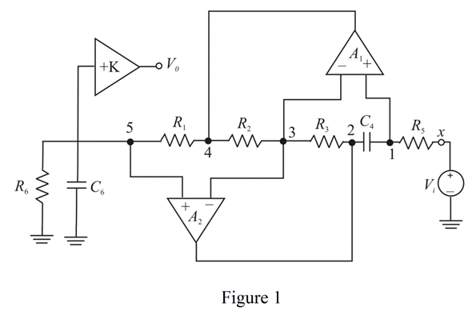

The voltage at node 1, 3 and 5 are equal and is given by the following equation:
.
The current from the source  is,
is,
The voltage at node 2 is,
Simplify further.
.
Refer to Figure 16.22(a) for the second-order filter circuit using the operational amplifier-RC resonator circuit.
Redraw the circuit by representing the nodes as shown in Figure 1.

The voltage at node 1, 3 and 5 are equal and is given by the following equation:
.
The current from the source is,
The voltage at node 2 is,
Simplify further.
.
The current through the resistor  is,
is,
Substitute for  in the equation.
in the equation.
The voltage at node 4 is,
Substitute for  in the equation.
in the equation.
The current through the resistor is,
is,
Substitute for  in the equation.
in the equation.
The current  flows into the resistor
flows into the resistor  and capacitor
and capacitor  .
.
For ideal operational amplifier, the input impedance is  . Thus, the voltage at node 5 is,
. Thus, the voltage at node 5 is,
Substitute for  in the equation.
in the equation.
Now, the transfer function is,
Thus, the transfer function is, .